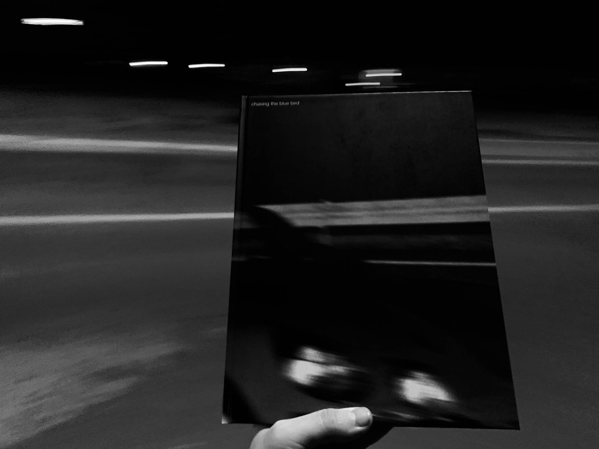
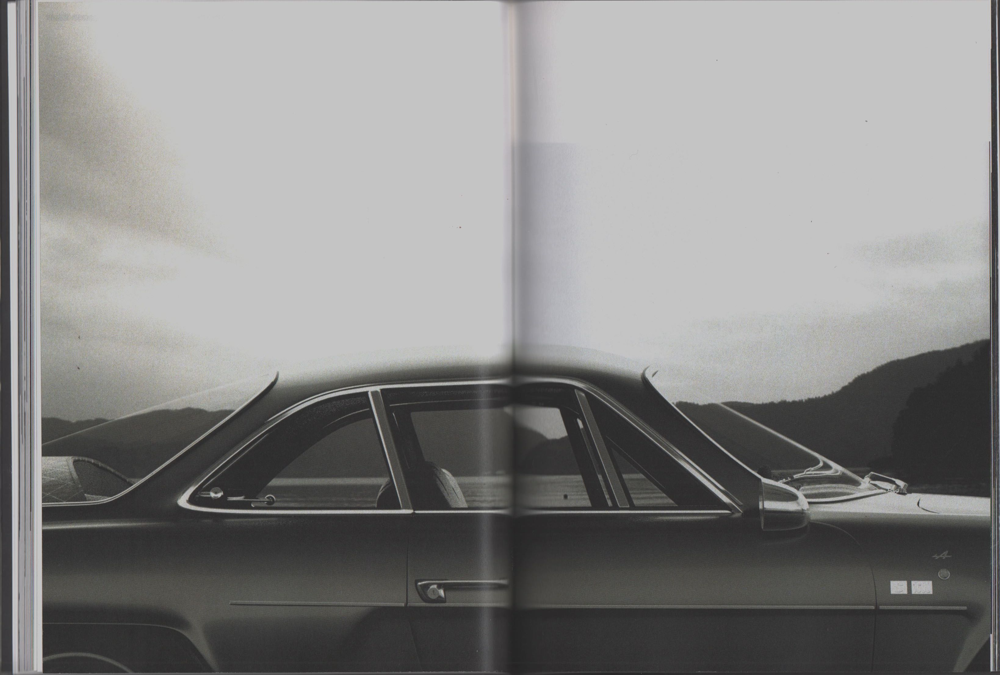
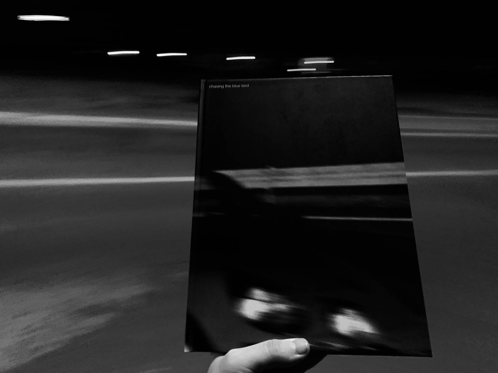
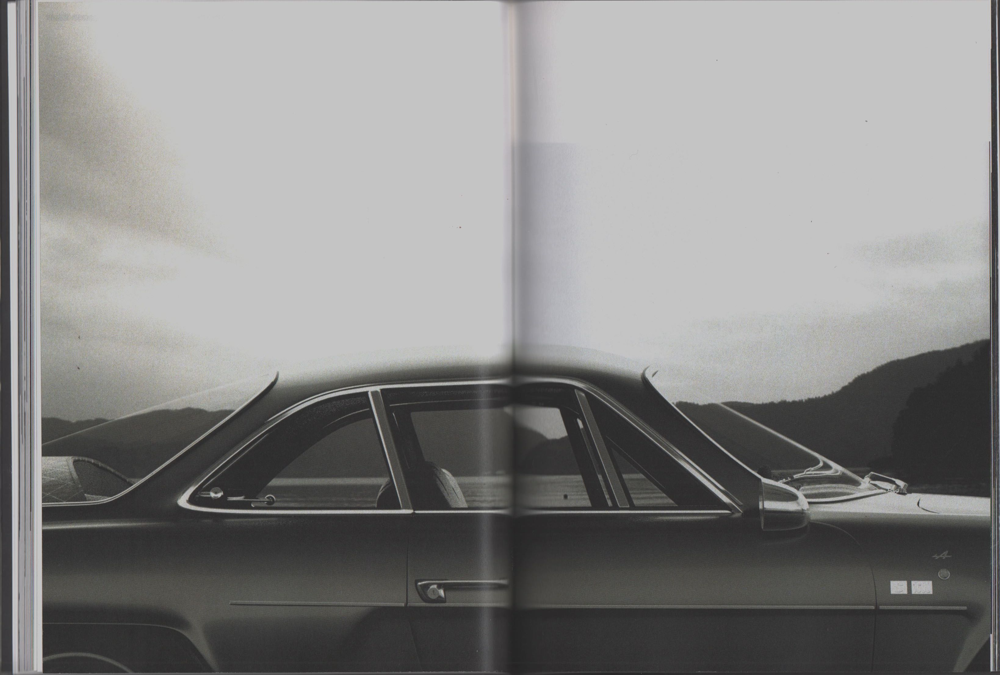
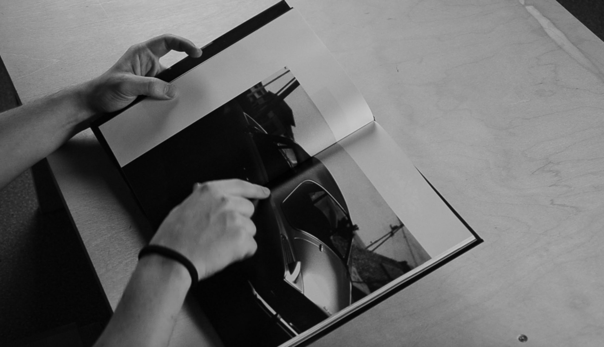
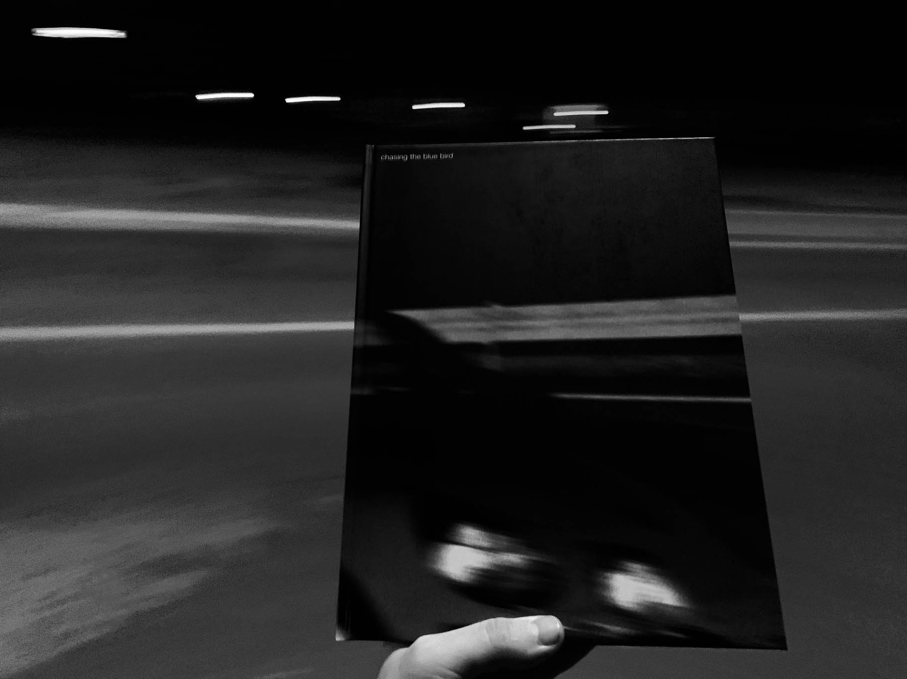
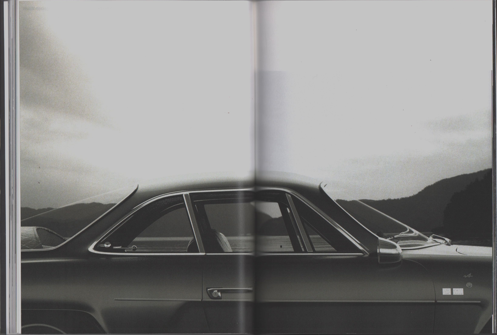

LOADING
LOADING
LOADING
LOADING
LOADING
LOADING
LOADING
LOADING
LOADING
major project
chasing the blue bird
2023
Warm summer evening
I'm driving my car along a winding road
towards a mountain peak
Smooth turns flow into the curves of the car's body
With the same smoothness I turn the steering wheel and gently pressing the gas pedal
enter a slight drift
1/3
2/3
3/3
This book is an attempt to convey the obsession with the car – Renault Alpine A110 1600s. Through photographs and their arrangement, I tried to find visual relations between the dynamics of the car, its forms, and the environment. By immersing the Alpine in context, I revealed it not as a set of parts, but as a holistic system of elements with a unique character.
Through the process of creating photographs, I also touched upon the theme of studying an object that I do not possess, immersing it in an environment where I physically did not exist. These conditions became both an additional challenge for me and provided me with a freedom that is inaccessible in real life.
My inspiration song: Minoru Muraoka – Take Five
gallery

